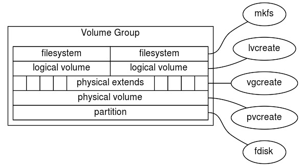

Logical Volume Manager (204.3)
Logical Volume Manager (204.3)¶
Candidates should be able to create and remove logical volumes, volume groups, and physical volumes. This objective includes snapshots and resizing logical volumes.
Key Knowledge Areas¶
-
Tools in the LVM suite
-
Resizing, renaming, creating, and removing logical volumes, volume groups, and physical volumes
-
Creating and maintaining snapshots
-
Activating volume groups
Terms and Utilities¶
-
/sbin/pv* -
/sbin/vg* -
/sbin/lv* -
mount -
/dev/mapper -
lvm.conf
Configuring Logical Volume Management¶
lvm is a logical volume manager for Linux. It enables you to
concatenate several physical volumes (hard disks etc.) to so-called
volume groups, forming a storage pool, much like a virtual disk. IDE
and SCSI disks, as well as multiple devices (MD) are supported.
In the figure below, the concepts and terminology used by lvm are
sketched. On the right side the names of the commands are shown that can
be used to create and/or manipulate the layer sketched on the left.

The physical media / partitions¶
- fdisk a hard disk, or a partition, e.g.
/dev/hda,/dev/hda6or/dev/sda. You should set the partition types of the disk or partition to0x8e, which is "Linux LVM". Partitioning is done usingfdisk. Please note that your version offdiskmay not yet know this type, so it will be listed as "Unknown". You can turn any consecutive number of blocks on a block device into a Physical Volume:
Physical Volume (PV)
- Physical Volume a physical medium with some administrative data
added to it. The command
pvcreatecan be used to add the administration onto the physical medium. The commandvgcreateis used to create a volume group, which consists of one or more PV's. A PV that has been grouped in a volume group contains Physical Extents:
Physical Extents (PE)
- Physical Extents Physical Extents are blocks of diskspace, often
several megabytes in size. Using the command
lvcreateyou can assign PEs to a Logical Volume:
Logical Volume (LV)
- Logical Volume A Logical Volume. On a logical volume we can use the
command
mkfsto get a Filesystem:
Filesystem
ext2,ReiserFS,NWFS,XFS,JFX,NTFSetc. mount To the linux kernel, there is no difference between a regular partition and a Logical Volume. A simplemountsuffices to be able to use your logical volume.
lvcreate lvol Some examples of typical usage of the LVM commandset
follow. Initially, you need to set the partition type for the partitions
to use to create logical volumes to 0x8e. Let's assume we have
partitions /dev/hda4 and /dev/hda5, and they are set to the correct
partitioning type. To create a physical volume on both partitions (i.e.
to set up the volume group descriptor) you type (being the superuser):
pvcreate
1 | |
Now we have created two physical volumes. Next, we will create a volume
group. A volume group needs to have a name (we choose volume01). To
create our volume group, using our previously defined physical volumes,
type: vgcreate
1 | |
The previous command line is the most basic form (refer to the manual pages for a list of configurable parameters). This will create an array of physical extents, by default they are 4 Mb in size. Using these extents we can create one or more logical volumes, e.g:
1 | |
This creates a logical volume with a default name choosen by
lvcreate and starts with the string lvol followed by a digit NDASH
let's assume lvol0. The logical volume will be created using the
volumegroup volume01. The name of the devicefile for this volume will
be /dev/volume01/lvol0. Next, we can make a filesystem on the
volumegroup, as usual, using mkfs, e.g. an xfs filesystem: mkfs
mount
1 | |
The resulting filesystem can be mounted as usual:
1 | |
Modifying logical volumes, volume groups and physical volumes¶
A logical volume can be modified in order to create more space for the filesystem that is on top of this logical volume. Assuming that there is enough space in the volume group a logical volume can be increased in size with the command: lvextend
1 | |
After the logical volume has been increased the filesystem on top of the logical volume still has the same size. To use the extra space of the logical volume the filesystem needs to be resized. This can be done by the command: xfs_grow
1 | |
For an ext2/ext3/ext4 file system use the command resize2fs. Note that
for resizing the filesystem it must not be mounted.
In the previous example it was assumed that there was enough free space in the volume group. If this is not the case, extra disk space can be added to the volume group in a similar way. To do so use the command: vgextend
1 | |
First device hda6 has to be converted into a physical volume with the command: pvcreate
1 | |
LVM Snapshots¶
snapshots One of the nicest features of LVM is the possibility of taking snapshots of volumes. A snapshot is a virtual copy of the volume to enable easy backups. LVM snapshots use a strategy called "copy on write". This means that the snapshot logical volume only saves data blocks from the original logical volume that are changed in the original logical volume. To do so the logical volume manager first reads the (unchanged) data block on the original and than writes the data block to the snapshot. On filesystems with many changes (e.g. databases) this can lead to performance issues.
The -s option in the lvcreate command specifies that the newly
created logical volume is a snapshot. lvcreate
1 | |
This will create a logical volume /dev/volume01/snapshot0, which then
can be used, among others, for backup purposes. The advantage of the
snapshot is that the data is consistent, i.e. the data doesn't change
during backup.
After the backup is finished, the snapshot has to be removed otherwise the performance issues mentioned earlier will start to come into play. To remove the snapshot use: lvremove
1 | |
LVM commands¶
This section gives an overview of most lvm related commands. The manual pages describe the commands more in detail.
pvchange
- pvchange
Change attributes of a physical volume
pvck
- pvck
Check physical volume metadata
pvcreate
- pvcreate
Initialize a disk or partition for use by LVM
pvdisplay
- pvdisplay
Display attributes of a physical volume
pvmove
- pvmove
Move physical extents
pvremove
- pvremove
Remove a physical volume
pvs
- pvs
Report information about physical volumes
pvscan
- pvscan
Scan all disk for physical volumes
lvchange
- lvchange
Change attributes for a logical volume
lvcreate
- lvcreate
Create a logical volume in an existing volume group
lvdisplay
- lvdisplay
Display attributes of a logical volumes
lvextend
- lvextend
Extend the size of a logical volume
lvmdiskscan
- lvmdiskscan
Scan for all devices visible to LVM2
lvreduce
- lvmreduce
Reduce the size of a logical volume
lvremove
- lvmremove
Remove a logical volume
lvrename
- lvmrename
Rename a logical volume
lvresize
- lvmresize
Resize a logical volume
lvs
- lvs
Report information about logical volumes
lvscan
- lvscan
Scan (all) disks for logical volumes
vgcfgbackup
- vgcfgbackup
Backup volume group descriptor area
vgchange
- vgchange
Change attributes of a volume group
vgck
- vgck
Check volume group metadata
vgconvert
- vgconvert
Convert volume group metadata
vgcreate
- vgcreate
Create a volume group
vgdisplay
- vgdisplay
Display attributes of volume groups
vgextend
- vgextend
Add physical volumes to a volume group
vgexport
- vgexport
Make volume groups unknown to the system
vgimport
- vgimport
Make exported volume groups known to the system
vgmerge
- vgmerge
Merge two volume groups
vgmknodes
- vgmknodes
Recreate volume group directory and logical volume special files
vgreduce
- vgreduce
Reduce a volume group
vgremove
- vgremove
Remove a volume group
vgrename
- vgrename
Rename a volume group
vgs
- vgs
Report information about volume groups
vgscan
- vgscan
Scan all disk for volume groups and rebuild caches
vgsplit
- vgsplit
Split a volume group into two
Device mapper¶
The device mapper is a kernel driver that provides a framework for volume management. It provides a generic way of creating mapped devices, which may be used as logical volumes. It does not specifically know about volume groups or metadata formats.
LVM logical volumes are activated using the device mapper. Each logical volume is translated into a mapped device. Each segment translates into a line in the mapping table that describes the device. The device mapper supports a variety of mapping targets, including linear mapping, striped mapping, and error mapping.
lvm.conf¶
At system startup lvm.conf configuration is loaded. The default
directory is /etc/lvm. But it can be set with the environment variable
LVM_SYSTEM_DIR. In the lvm.conf file you can specify additional
configuration to load. To display the current settings, you can execute
the lvm dumpconfig command.
vgscan pvs The vgscan command scans for block devices with lvm
metadata on it. These physical volumes are stored in the lvm cache. This
command uses the lvm.conf file to determine that. When for instance
you use multipath devices, the metadata is the same on all the disks, on
the different paths. Which will cause a lot of duplicates when you run
pvs. Also when you want to boot of a multipath device, it can boot of
a single path. You can use the filter option in the devices section for
this in the lvm.conf, to skip the other devices and only look for
multipath devices. The filter option uses regular expression to accept
or reject block devices, like in below examples. Add all discovered
devices:
1 | |
Filter to remove cdrom devices:
1 | |
Filter only device mapper names on a multipath device:
1 | |
This filter just adds partition 8 on the first IDE Harddrive and removes all other block devices.
1 | |
Other usefull and commonly used option in the devices sections in the
lvm.conf are: preferred_names The earliest pattern is used in any
output like pvs. So in our example of multipath devices we want.
1 | |
types If you boot from a local device and the rest are multipath devices, you need to change the types option, next to the filter option with this example. I tells LVM the acceptable block devices (device-mapper) and the allowed partitions (253)
1 | |
For other sections with options check: man lvm.conf